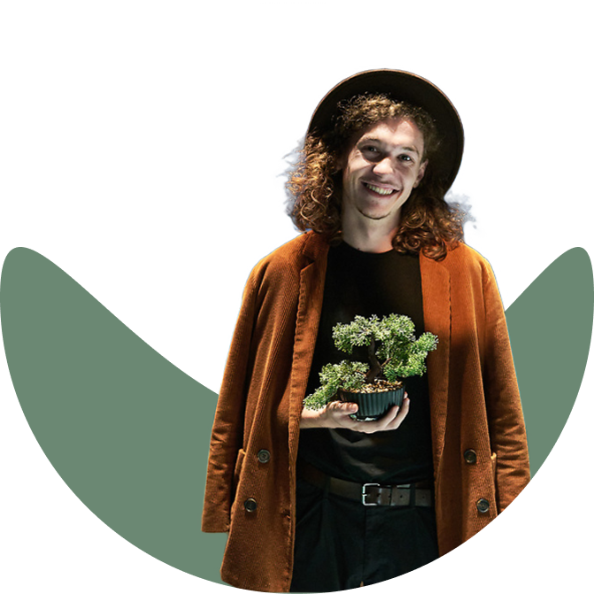
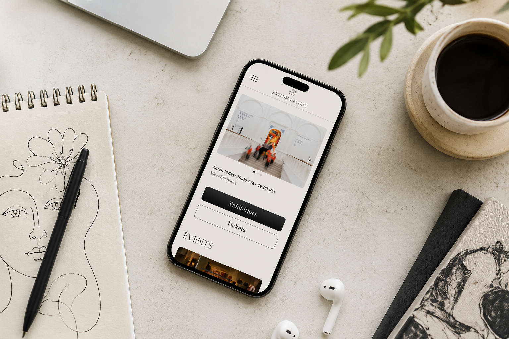
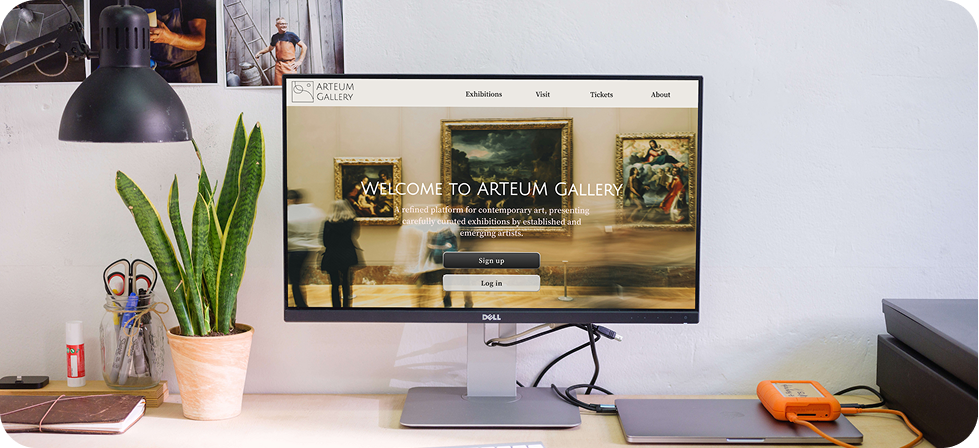
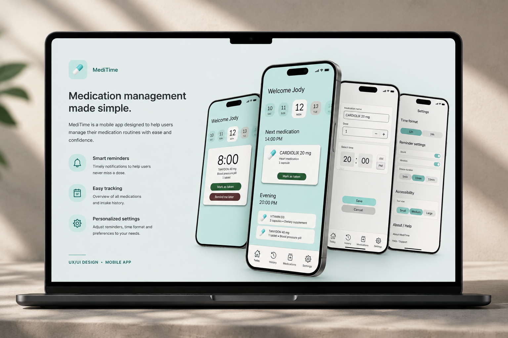

Hi, I'm Zsolti!
UX/UI designer creating simple, accessible, and user-centered digital experiences.
View Projects
About
I'm a UX/UI designer with a background in theatre and music. Working in live performance environments taught me how to understand people, communicate effectively, and solve problems under pressure.
These experiences shaped the way I approach design today. I enjoy creating simple, accessible, and intuitive digital products that focus on real user needs.
After completing the Google UX Design Professional Certificate, I began building projects that combine research, usability, and visual design. I'm currently growing my portfolio and looking for opportunities to develop as a UX/UI designer.
Projects


